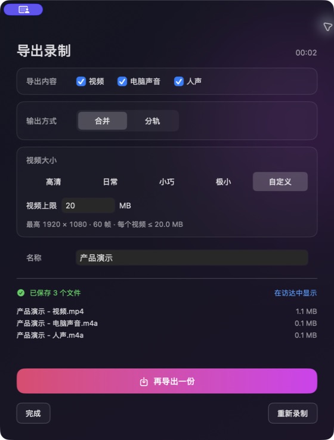

清晰度与体积，按需选择
高清、日常、小巧、极小、自定义。保留细节，或节省空间，也能直接填写视频大小上限。
从选择画面到保存文件，保留真正需要的选择。
高清、日常、小巧、极小、自定义。保留细节，或节省空间，也能直接填写视频大小上限。
电脑声音、人声、摄像头独立开关。人声和摄像头默认关闭，可选自然修饰，人像直接合入成片。
无账号、无统计、无网络请求。屏幕、摄像头与声音只在本机处理，文件直接进「下载」。
倒计时、录制控制条和摄像头预览自动排除。主面板可正常截图，也可主动放进整屏或局部录制画面。
三项内容分别勾选，合并为一个文件，或分轨各留一份。只要声音时，也能直接导出 M4A。
保存前命名，保存后换一种方式再次导出。录得不满意，直接放弃此次录制或重新录制。
按场景选来源。浏览器不必最大化，只要没有最小化即可录制。
只录选中的浏览器窗口，按原始比例完整铺满画面。其他应用与窗口不会进入成片。
录制当前主显示器，保持原始比例与原生像素。适合演示、教学与完整工作流记录。
七种比例、圆角选区、聚焦蒙版与点击穿透浮层。用 ⌘E 锁定范围，再用 ⌘R 开始录制。
勾选视频、电脑声音和人声，选择合并或分轨。保存前命名，保存后可以换一种方式继续导出。

每种用途，都有合适的体积。
保持原始比例。小体积档可能进一步降低尺寸，极小档会减少小字细节。自定义上限针对每个 MP4，最低不得低于当前“极小”档的体积预算，导出页会建议大小范围；独立音频另计。高清在压缩收益不足且原片不超过 30 帧时保留原片。
Snap Recorder 不联网、不上传、不收集统计，也不包含任何第三方分析 SDK。所有采集与编码都在本机完成。
保存前确认，保存后仍可继续。
首次启动允许屏幕与系统音频；需要人声或人像时，再分别允许麦克风与摄像头。
浏览器、整个屏幕或局部录像，按需打开声音、摄像头与鼠标光点。人像可选圆角或圆形，轻松调整大小与位置。
3 秒倒计时后开始。可随时暂停、继续或结束。
勾选内容，选择合并或分轨、视频大小，命名后保存到「下载」。需要时可以再次导出。
一个安装包，同时支持 Apple Silicon 与 Intel Mac。